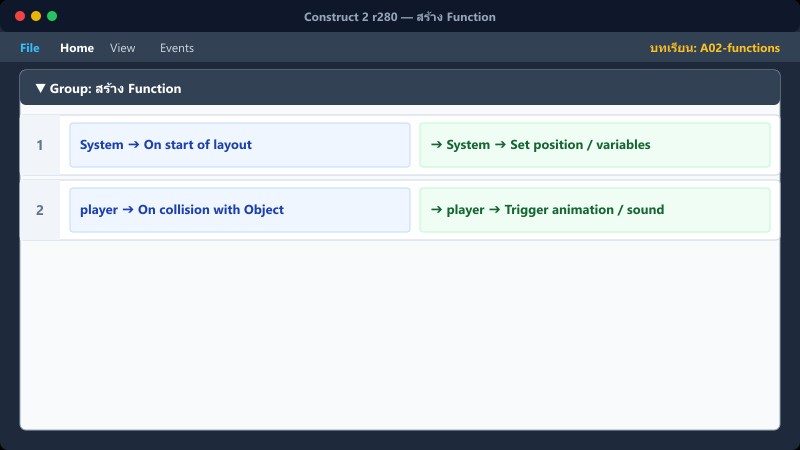
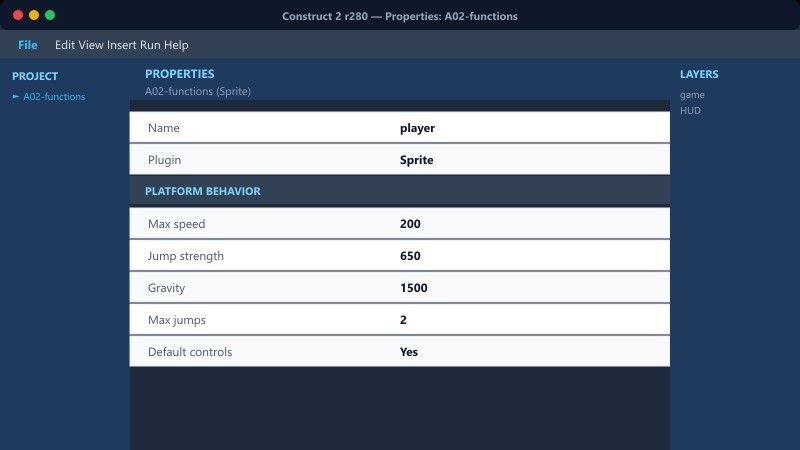
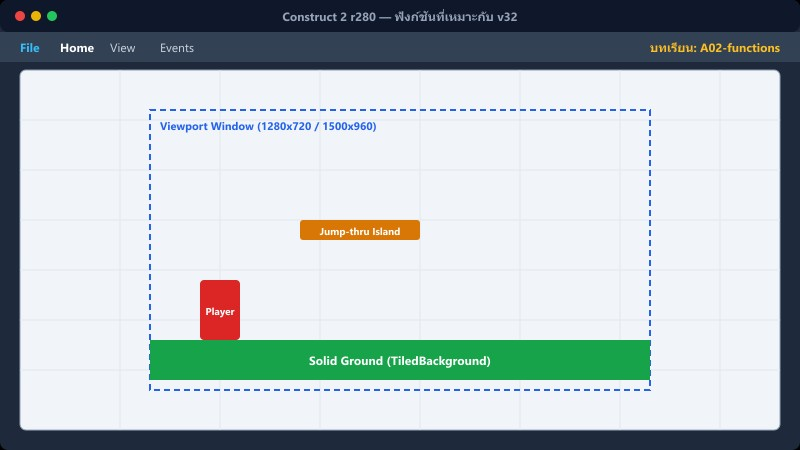

เป้าหมายบทนี้: ย้ายชุด Action ที่ซ้ำหลายจุดไปไว้ใน Function แล้วเรียกจาก Event อื่น
Add Function→ใส่ Actions→Call Function→ลดซ้ำ
1สร้าง Function

Event sheet → Include Function object (ถ้ายังไม่มี) หรือ Add function
- Add Function ชื่อ ApplyDamage
- ในฟังก์ชัน: Subtract พลังชีวิต · Flash · Play hurt
จุดที่เคยคัดลอกดาเมจ 3–4 ที่ → เหลือ Call Function ที่เดียว
2เรียกใช้

ชน eminy (กรณีเจ็บ)
Function → Call ApplyDamage
ชน emon_bullet / ตอบผิด → Call ตัวเดียวกัน
3ฟังก์ชันที่เหมาะกับ v32

ApplyDamage · SpawnQuestion · SaveTop5 · ClearStage
พารามิเตอร์ (ถ้าใช้): จำนวนดาเมจ / ชื่อด่าน
4ผิดพลาดที่พบบ่อย

Call ชื่อผิดตัวอักษร → ไม่ทำงานเงียบๆ
ใส่ Wait ใน Function โดยไม่เข้าใจบริบท → จังหวะพัง
ยังไม่ Include Function object ในโปรเจกต์